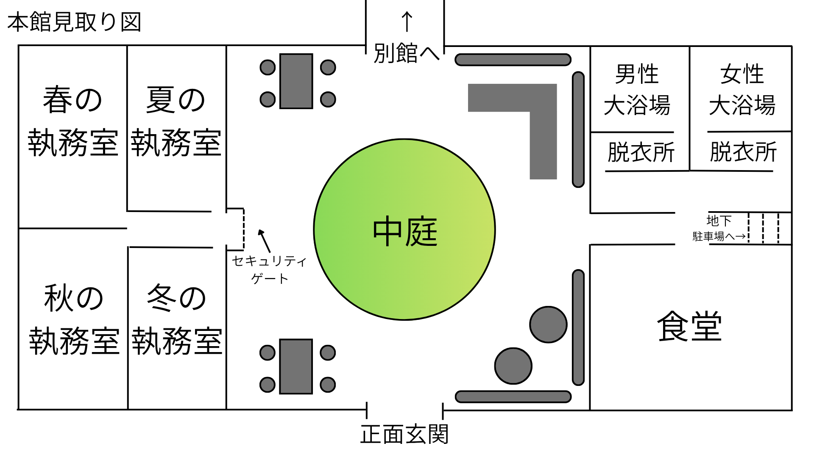
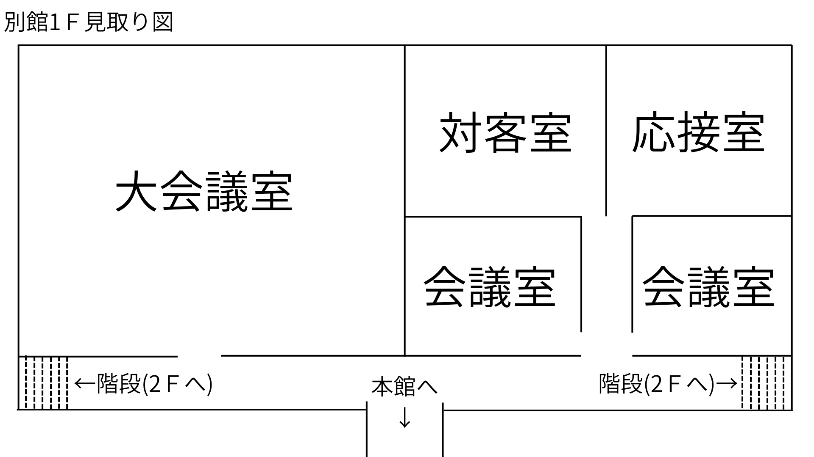

【プロローグ】
“春”、それは誕生の時。生命の芽吹く暖かな世界の名前。
“夏”、それは激動の時。生命を育てる熱き世界の名前。
“秋”、それは変化の時。生命に実りを与える優しい世界の名前。
“冬”、それは試練の時。生命に静寂を与える悲しき世界の名前。
初めに“冬”があった、世界には“冬”しか季節がなく、“冬”は孤独に耐えかね春を創った。
“春”は“冬”を、“冬”は“春”を恋い慕い、仲睦まじく繰り返した。
冬は空に夏と秋を創った。
“春”は“冬”を追いかけ、“夏”と“秋”が続く、季節は“春夏秋冬”と巡るようになったが、
“春”と“冬”の蜜月はもう存在しなかった。
そこで、“夏”と“秋”は提案をした。
大地に住まう者たちに自分たちの役割を任せてはどうかと。
“四季”達は人間にその力の一部をお与えになり、冬は永遠に春を愛す時間を得た。
神話はそう伝えている。
春には桜の絨毯を
夏には緑の海を
秋には銀杏の帳を
冬には白銀の揺りかごを
一年をかけて大地を巡り歩き季節の寵愛を森羅万象に贈る、
神々よりその権能を授かりその使命を担うもの、その名を「四季の代行者」。
これはその四季の代行者の物語であり、神話の続きであり、
人殺しの話であり、救済の話であり、友情の話であり、よくある恋の話であり、
そして、人々が織りなす人生の話でもある。
これは、10年前に奪われた、季節を巡る物語だ。
【オープニング】
世界には、“四季”という名の息吹が巡る。
春の芽吹き、夏の生命、秋の黄昏、そして冬の静寂。
神々に代わり、その天の権能――神通力を身に宿した四人の「代行者」たちが、 このヤマトの国に季節の営みをもたらしていた。 しかし、10年前のあの日。ヤマトの国から、不意に“春”が掻き消えた。
慈愛に満ちた春の代行者・椿（つばき）の失踪。 彼女が姿を消した惨劇の夜を境に、世界から春という温もりは途絶え、 爛漫（らんまん）たる花々が咲き誇ることは二度となかったのである。
巡るはずの季節を束ね、世界の調和を司る四季統括者・結城悠太（ゆうき ゆうた）。 十年のあいだ、沈黙を保ち続けていた男が、突如としてすべての代行者を強制招集した。 不穏な予感と疑念を胸に秘め、夏の代行者ヒマワリ、秋の代行者ダリア、冬の代行者ヒイラギ。 彼らはそれぞれの護衛官を伴い、重々しい静寂が満ちる大広間へと集う。
そこに、見知らぬ幼き少女がひとり、静かに座っていた。 雪のごとき白い和装に身を包み、桜を溶かしたかのような桃色の長髪を流す少女。 その面立ちには、年端もいかぬ幼さと、どこか浮世離れした神聖な美しさが同居していた。 少女の傍らには、見紛うはずもない一人の女性が佇んでいる。 護衛官の黒い隊服を纏い、腰に刀を携えた女性。 黒髪の隙間から覗く桃色の双眸。かつて椿に寄り添い続けた、春の護衛官サクラの姿であった。 その静謐（せいひつ）な光景を目にした瞬間、居並ぶ代行者たちの胸を、冷たい衝撃が貫いた。
この世界に同じ季節の代行者が同時に存在することはできないのである。 新たな春の代行者の誕生。それはつまり、 十年前、あの日失踪した春の代行者・椿の死。 そして今、新たな“春”が、この世界に芽吹いたのだと。
【メインストーリー】
厳寒の冬、真っ只中に集められたホール。
そこに佇む異彩を放つ少女に全ての人の目は釘付けになる。
ヒイラギ「ま、まさか、新たな春の代行者が現れたのか？」
冬の代行者・ヒイラギは驚愕に顔を歪ませたまま、そう言い放った。
ヒマワリ「そ、それってまさか…」
ダリア「ツバキが死んだのか！？」
夏の代行者・ヒマワリの言葉を遮って、秋の代行者・ダリアが声を荒げる。
世界に季節を巡らせる代行者は、神々により選ばれ、その使命を全うする。
代行者が何らかの理由で命を落とした場合には、
代行者の一族から新たな代行者が神々により選ばれる。
この世に同じ季節の代行者が複数人存在することはできないのである。
ここまで沈黙を貫いていた、今回の召集の張本人”ユウタ”がおもむろに口を開く。
ユウタ「遠路はるばるよくぞ参られた。代行者とその従者様方。今回お集まりいただいたのはご察しの通り、新たな春の代行者様が顕現された。ひいては…」
ヒイラギ「待て！それは事実か？ツバキは本当に死んだのか？」
ユウタ「・・・。ヒジリ、頼む。」
ユウタは隣に控えていた副官”ヒジリ”に声をかける。
ヒジリはまるでこうなることがわかっているかのように、スクリーンに画像を表示する。
そこに写っていたのは、大人になったツバキのもう二度と動くことのない姿だった。
ユウタ「つい先日のことになります。我々の捜査によってテロ組織のアジトの所在を突き止め、捜索作戦を決行いたしました。その際、地下室にてツバキ様を発見。その場で死亡が確認されました。」
ヒマワリ「ツバキちゃん…。」
ヒイラギ「ツバキ…。」
ダリア「そ、そんな。ツバキ…。」
代行者たちはそれぞれの反応をしめす。
しかし、その空気を両断するかのように、ユウタは冷たく言葉を放つ。
ユウタ「10年間ヤマトの国に訪れなかった春。ヒナギク様の顕現により、久方ぶりの生命の息吹を感じることが出来るでしょう。」
ユウタは淡々とまるで業務連絡でもするかのように言葉を綴る。
その態度に代行者たちは眉を顰める。
しかし、ユウタは微かに語尾を震わせ、苦難の表情を見せる。
ユウタ「私はこの10年間、あの夜を忘れたことはありませんでした。今回の調査である事実が判明しました。あの夜、ツバキ様の誘拐の裏に”内通者の存在があった”と。」
ヒジリ「そして、その疑いがあるのはあの日、
あの場所にいた皆さんの中にいると我々は考えています。」
ヒイラギ「つまり、四季庁が唐突に我々を収集したのは・・・。」
ヒマワリ「ツバキちゃん誘拐の犯人と通じていた裏切者を暴くため？」
ダリア「しかし、アジトを捜索したのだろう？尋問すれば裏切者もおのずと出てくるのでは？」
ユウタ「今回の作戦で逮捕した者は全員自決しました。そのため情報は少ないのです。」
サクラ「お話中のところ失礼いたします。春の代行者護衛官サクラと申します。そちらの情報についてはヒナギク様からお話があります。ヒナギク様、お願いします。」
皆の話を遮り、春の護衛官サクラがヒナギクに話を振る。
ヒナギク「み、皆さま、お初にお目にかかります。このたび新たに春の代行者として覚醒しました。”ヒナギク”と申します。実は、私が覚醒したとき、断片的にですがツバキ様の記憶を継承しました。」
新たな春の代行者ヒナギクは小さな声で驚きの事実を口にした。
ヒイラギ「それは本当か！？裏切者は誰だったんだ！！」
ヒナギク「ひっ！？」
ヒイラギの勢いに押され、まだ幼いヒナギクは身をすくませる。
それを見た春の護衛官サクラは憤りを見せ、鋭い目つきで間に入る。
サクラ「ヒイラギ様。これ以上我々はあなたの横暴を許すつもりはありません。もし次に、ヒナギク様に対して敵対的な言動を確認次第、我々はあなた方冬との全面対立も辞さないつもりです。」
ヒイラギ「…。すまない。」
サクラの言葉にヒイラギは全く反抗の意思を見せずに謝罪の言葉を口にする。
そこにヒマワリが冷ややかな口調で割り込む。
ヒマワリ「私もあの日のことを許したつもりはないから。」
ヒイラギ「・・・。」
ユウタ「その辺にしていただきたい。建設的な話をしましょう。大切なのは裏切り者は一体誰なのかということです。」
こうして、10年前のあの日の悲劇、その裏切者を暴く審問の時間が始まった。